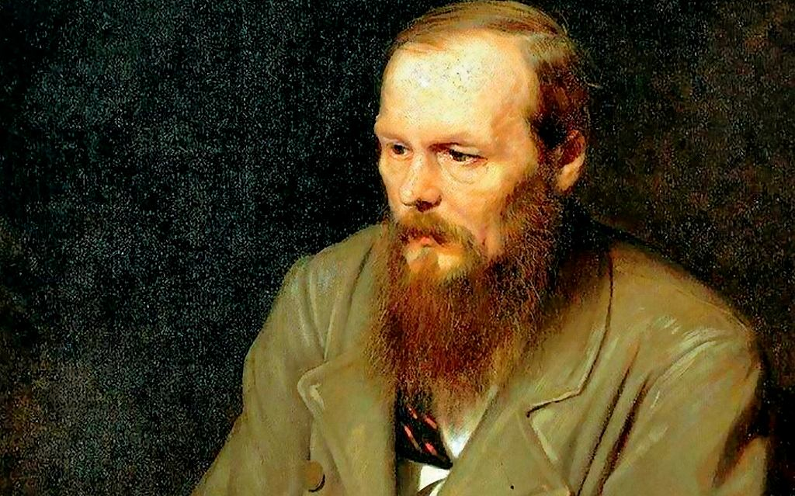
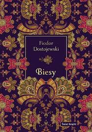
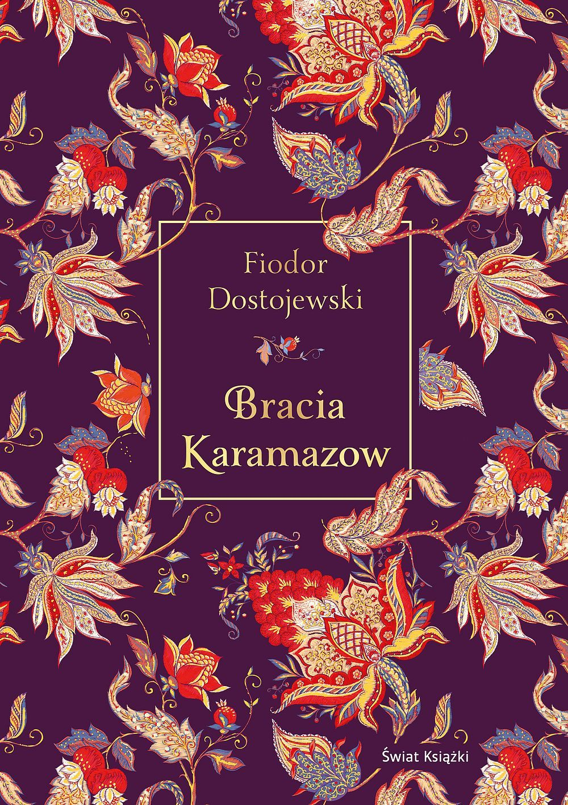
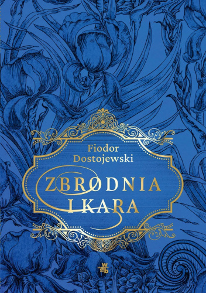
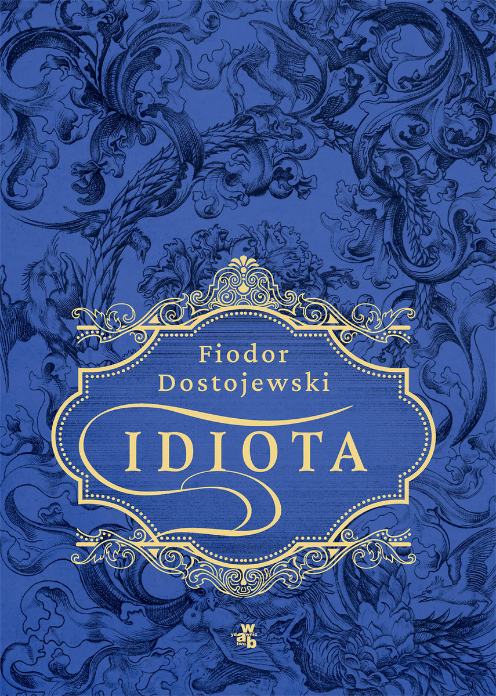

Architekt mroków ludzkiej psychiki
Fiodor Michajłowicz Dostojewski nie był jedynie pisarzem; był inżynierem duszy, który operował na otwartym sercu rosyjskiego społeczeństwa XIX wieku. Jego biografia to matematyczny dowód na to, że cierpienie jest najskuteczniejszym katalizatorem geniuszu. Od porzucenia kariery inżyniera wojskowego, przez traumę sfingowanej egzekucji, aż po lata katorgi na Syberii – każdy z tych etapów odcisnął niezatarte piętno na jego twórczości, czyniąc ją unikalnym stopem sacrum i profanum.
Fundamenty Filozoficzne: Polifonia i Dialog
W przeciwieństwie do Tołstoja, który pełni rolę wszechwiedzącego demiurga, Dostojewski wprowadził do literatury polifonię. Każdy z jego bohaterów – od nihilisty Stawrogina, przez uduchowionego Aloszę, aż po buntownika Iwana – posiada własny, równoprawny głos. Pisarz nie ocenia ich z góry; on pozwala ich ideom zderzać się w brutalnym, dialektycznym procesie, który często prowadzi do szaleństwa lub duchowego odrodzenia.
Główne Filary Twórczości:
Antropologia strachu i wolności: Dostojewski badał granice ludzkiej wolności. Zadawał pytanie: czy człowiek bez Boga staje się Bogiem, czy jedynie bestią? Jego bohaterowie, jak Kiryłow w Biesach, testują tę wolność poprzez akty ostateczne.
Analiza nihilizmu: Jako jeden z pierwszych dostrzegł destrukcyjną moc idei odrywających człowieka od tradycji i ziemi. W jego oczach nihilizm nie był tylko poglądem politycznym, ale duchową chorobą – „biesami” opętującymi jednostki i narody.
Psychologia głębi: Na dekady przed Freudem, Dostojewski opisywał podświadomość, sny, obsesje i stany graniczne. Interesował go człowiek w momencie kryzysu, kiedy maski konwenansów spadają, odsłaniając nagą, często przerażającą prawdę.
„Jedna chwila wystarczy, aby człowiek stał się nieszczęśliwy, ale potrzeba wielu lat, aby stał się człowiekiem.”



